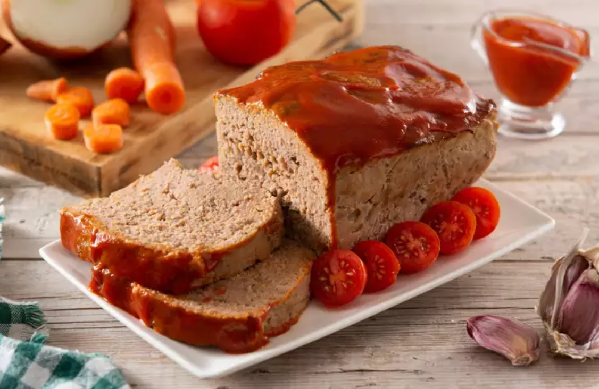

Odin Meatloaf

Ingredients
- 1 medium carrot, coarsely chopped
- 1 rib celery, coarsely chopped
- ½ medium onion, coarsely chopped
- ½ medium red bell pepper, coarsely chopped
- 4 white mushrooms, coarsely chopped
- 3 cloves garlic, coarsely chopped
- 2 ½ pounds ground chuck
- 1 tablespoon Worcestershire sauce
- 1 large egg, beaten
- 1 teaspoon dried Italian herbs
- 2 teaspoons salt
- 1 teaspoon ground black pepper
- ½ teaspoon cayenne pepper
- 1 cup plain bread crumbs
- 2 tablespoons brown sugar
- 2 tablespoons ketchup
- 2 tablespoons Dijon mustard
- 1 teaspoon Sriracha sauce, or to taste
Steps
- Gather all ingredients.
- Preheat the oven to 325 degrees F (165 degrees C). Line a baking dish with lightly greased foil.
- Place carrot, celery, onion, bell pepper, mushrooms, and garlic in a food processor; pulse until very finely chopped, almost to a purée. Transfer to a large mixing bowl.
- Add ground chuck to the vegetables, along with Worcestershire sauce, egg, Italian herbs, salt, black pepper, and cayenne. Mix gently with a wooden spoon until ingredients are just combined. Sprinkle in bread crumbs and gently mix with your fingertips until just combined; don't overmix.
- Shape the mixture into a loaf, about 4 inches high by 6 inches across. Place in the prepared baking pan.
- Bake in the preheated oven just until the meatloaf is hot, about 15 minutes.
- Meanwhile, stir brown sugar, ketchup, Dijon, and Sriracha for glaze in a small bowl until brown sugar has dissolved.
- Remove meatloaf from the oven. Spoon glaze on the top of the meatloaf with the back of a spoon, then pull a tiny bit glaze down the sides.
- Return to the oven, and bake until no longer pink inside, 45 to 75 more minutes. An instant-read thermometer inserted into the thickest part of the loaf should read at least 160 degrees F (70 degrees C), so start checking at 45 minutes and continue baking until meatloaf reaches that temperature. Cooking time will depend on shape and thickness of the meatloaf.
- Serve hot and enjoy!